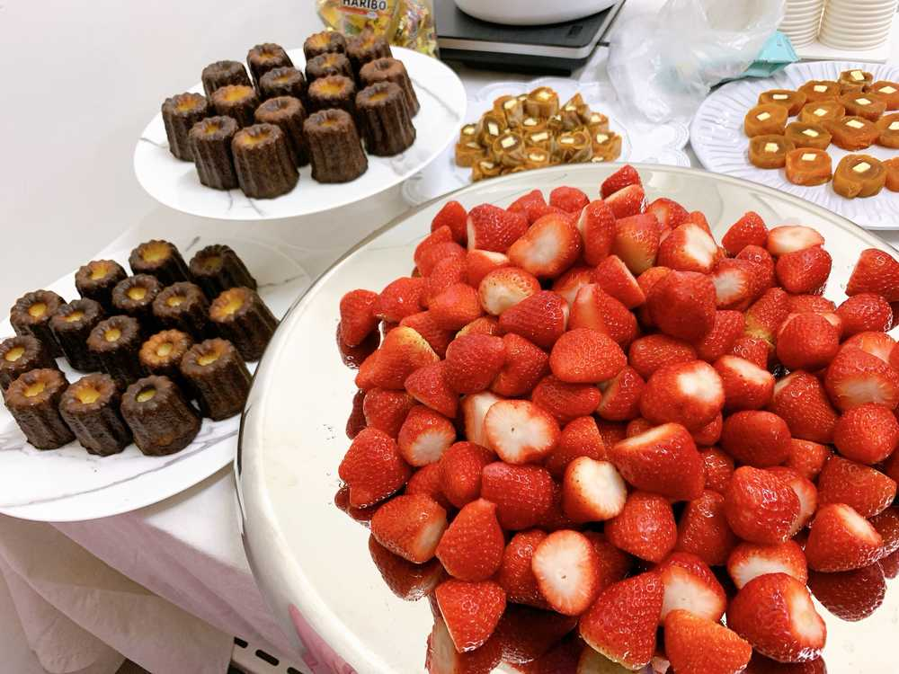

おはよう😃
ひいだよ🍓

昨日はフルーツだけじゃなくて
オシャレなカヌレもあったし
奥にあるのは干し柿だよ🍊
最初見たときなんだかわからなくて
チェウォンオンニに聞いたら
「これほしがき」って日本語で
教えてくれたの😳
なんで「干し柿」っていう単語知ってるの！？ってびっくりしちゃった😂
韓国語では
「곶감」ゴッカムといいます💡
中に入ってるのはバターだよ🧈
バターと一緒に食べるって
不思議な感じがする🤭
から食べる勇気がなかったけど
ミンジュが美味しいよって言ってた！
だけど横にある
いちごを食べた！！😂🍓
でもなんで干し柿というワードを
チェウォンオンニは知っているのか。。
そんなに好きな食べ物だったのか…？？
どこで習ったんだろう。。
それが未だに気になっている🧐笑
あと今日は新しいハンドクリームを
つけました👐🏻
とってもいい匂いなの🥺
オーガニック系の癒される
優しい香りです🍃
よく「好きな香りは何ですか？」って聞かれるけどいっぱいあるんだよね😳
香水だったらバニラ系の甘いの好きだし〜
お花だったら金木犀が好きだし〜
でもオーガニック系の匂いも好き〜☺️☺️☺️
でも香水の甘い系の香りって
なんとなく冬のイメージだからね❄️
だけどひい結構匂いの好き嫌いあるからな🙂
なかなか新しい香りに
挑戦できないの😕💦
이호はどんな香りが好きですか？？？
ではまたっ
오늘의 TMI💡
이틀 연속으로 일찍 일어났어요👍🏻
잘 했죠😚??
아침에 일찍 일어나면 기분도 좋고
뭔가 건강한 몸에 좋은 느낌이에요😊
이호는 몇시에 일어났어요???
토요일이라서 많이 잤나요😴???
그리고 어제 채원언니가
[곶감]을 알려줬어요!!!
버터랑 같이 먹는게 보통인가요???
너무 신기하다😳
버터말고 크림치즈는 어떨까...??
맛이 없나...??ㅎㅎㅎ
해보고싶다😆
그러면 질문 하나만!!!
Q. 이번 활동 중에 어떤 의상이 가장 좋았어???
A. 다 좋았지만...
개인적으로 컴백쇼 때 입었던 의상💐
체크 치마👗
근데 그 의상 너무 예쁘지만
사실은 조금 무거워요ㅎㅎㅎ
춤출 때는 수트가 제일 편해요👍🏻👍🏻👍🏻
いつかとった写真🙂
ばいばーい👋🏻
ひいまる🥟